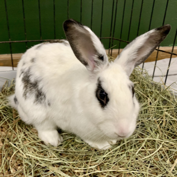

Maybelline
Breed: Mix
Sex: Female
Age: 5 Years, 1 Month
Weight: 4.6 Pounds
Bio
I am Maybelline. I love having space to kick up my heels in my foster home. Being confined makes me very anxious.
I have a fear that no one will respect my space like my foster mom does.
I prefer to not be in a home
with children, they make me nervous. I need a forever home with someone with prior rabbit experience, especially
with rabbits who are slow to trust.
Want to Support Me?
To support me, or any of the sanctuary rabbits at the IHRS, please Donate to our GoFundMe if you are able.